SCHEDULE COMPARATOR
The guide to using this Schedule Comparator
Step 1: Create/Join session
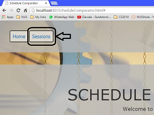Go to "Sessions" in above menu to create a session for your group of friends or join an existing session created by one of your friends. This would then allow you to start using the Schedule Comparator. Click on the buttons to find out more.
Step 2: Start using the comparator
There are two options offered in this comparator. Click on the buttons to find out more.


Step 3: Exiting
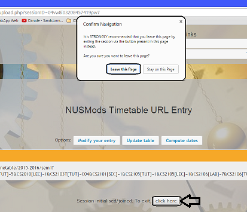To stop using the comparator, simply click on the button (see the arrow), which will reveal a pop-up. Click on the 'Leave this Page' button in the pop-up to safely exit the session.
In the "Sessions" page, click on the option for creating the session (see the arrow). A form will appear.
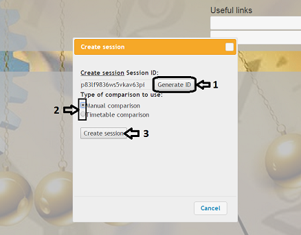
1. Click on the 'Generate ID' button to generate a session ID.
2. Select the comparison method desired.
3. Click on the 'Create session' button to create a session.
If you are not the one who created the session, you should instead join an existing session created by one of your friends, who should have informed you about the session ID. Use that session ID to join the correct session and your group members can start filling in your schedules.
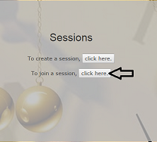
In the "Sessions" page, click on the option for joining the session (see the arrow). A form will appear.
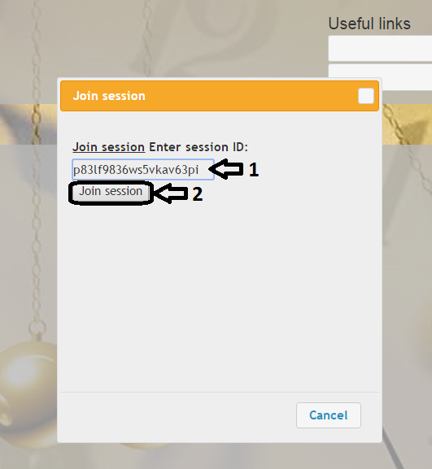
1. Fill in the session ID in the input field.
2. Click on the 'Join session' button to join the session.
After successfully creating/joining a manual-option session, this is the page where you will land. To start entering your entry, click on the 'Add your entry' button. A form will appear.
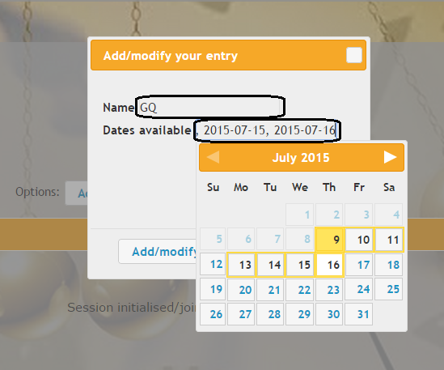
Fill in your name as well as use the datepicker interface to select dates that you are available. To select a date, click on it once. To unselect that same date, click on it again.
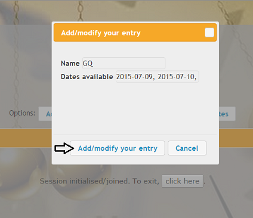
When you are done, just click on the 'Add/modify your entry' button to submit and you should get an alert as show below.
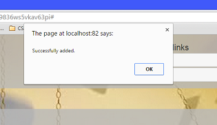
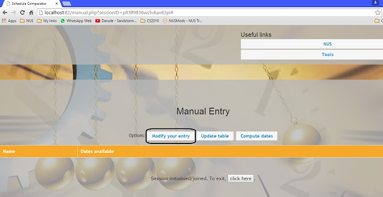
If you have already submitted your entry and wish to make changes, just click on the 'Modify your entry' button. A form will appear (as shown below) and you can make your desired changes and submit your updated entry. If successful, you should get an alert (also shown below).
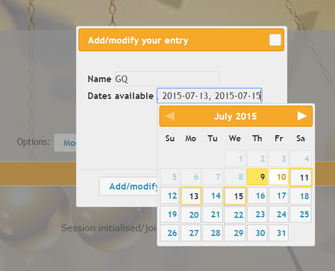
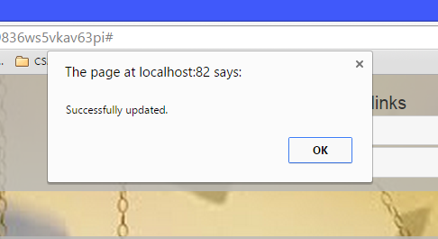
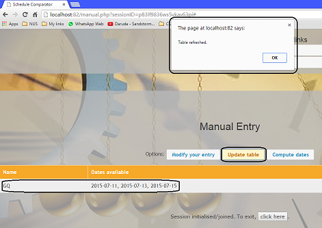
To see who has entered their schedules, click on the 'Update table' button and you will get an alert, in which a table will display all entries that were submitted in the session.

After everyone is done, you can click on the 'Compute dates' button to find out which date everyone is available for a meet-up/gathering, which will be shown on an alert (see above).
After successfully creating/joining a timetable-option session, this is the page where you will land. Click on 'Add your entry' to fill in your information.
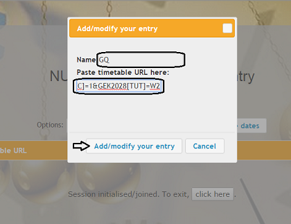
Fill in your name as well as your NUSMods timetable URL (or hyperlink). When you are done, click on the 'Add/modify your entry' button to submit and you should get a 'Successfully added' alert.
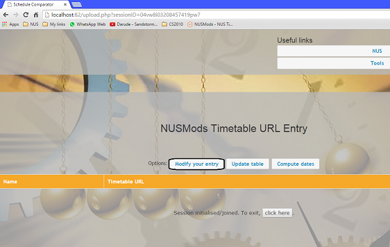
If you wish to make changes, just click on the 'Modify your entry' button and change your inputs as desired. Upon successful modification, you should get a 'Successfully updated' alert.
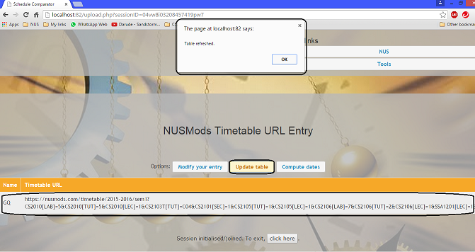
To see who has entered their schedules, click on the 'Update user' button and you will get an alert, in which a table will display all entries that were submitted in the session.
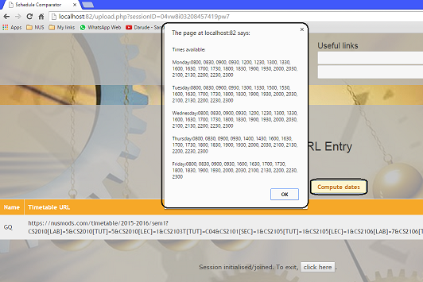
After everyone is done, you can click on the 'Compute dates' button to find out which date and time slots everyone is available for a meet-up/gathering, which will be shown on an alert (see above).